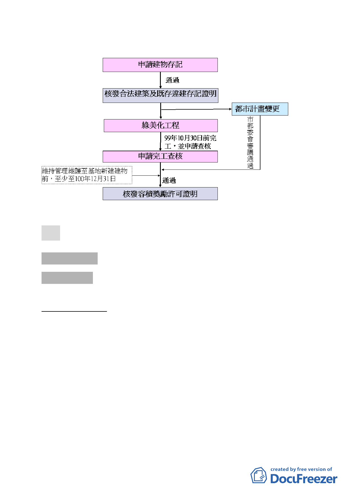

三、申請流程
決議：本案依市府本次提會修正後資料內容洽悉。
叁、討論事項
討論事項 一
案名：臺北市建築基地未開發前環境改善容積獎勵案
案情概要說明：
一、 計畫緣起與目的：
為提升都市景觀、美化市容環境，並配合「2010 臺北國
際花卉博覽會」，本計畫以容積獎勵、建物存記機制方式，
鼓勵閒置窳陋建築物進行環境更新，主動將基地騰空、開放
綠美化至土地開發前。
二、 計畫範圍
以98 年12 月31 日前經本府審議通過核發建物存記證
明之案件為範圍，計有73 處，總面積14.56 公頃；（位置及
面積詳如表1 及示意圖）其中公有地14 處，私有地59 處。
三、 變更計畫內容：
-5-